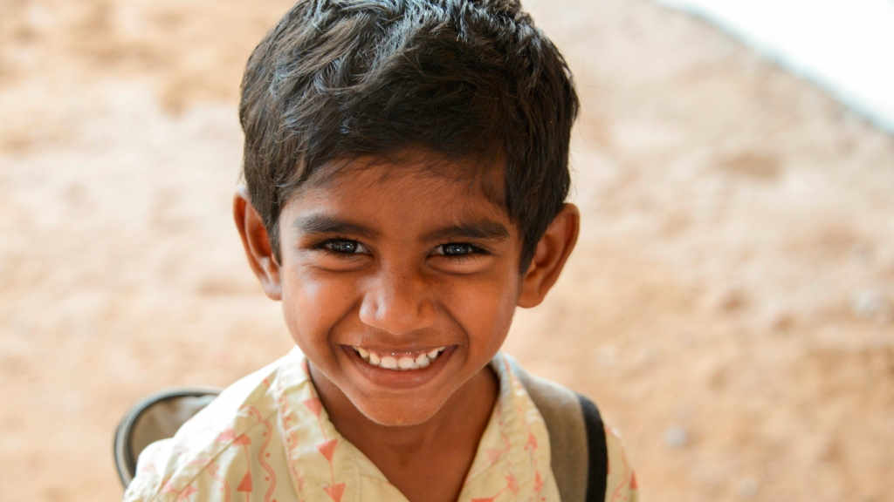

Help poor children fight their way out of poverty. When it is hard to afford necessities like food, shelter, and clothing; education becomes a luxury that the poor give up. Illiteracy then leads to further poverty. Donate for child education in India, support them with fees, school supplies, footwear, transport and opportunities to showcase their talents.
20 Million children in India do not go to school. Millions of children are still denied their right to education because of poverty. Donate for the education of poor children and support them with necessities like tuition fees, school supplies, footwear, transport, etc. Help them build a future that will make them escape poverty passed from generation to generation.
You can donate directly to Relief Fund and we'll allocate it to where it's needed most. We will post reports about how your donation has been put to use.
20 Million children in India do not go to school. Millions of children are still denied their right to education because of poverty. Donate for the education of poor children and support them with necessities like tuition fees, school supplies, footwear, transport, etc. Help them build a future that will make them escape poverty passed from generation to generation.
You can donate directly to Relief Fund and we'll allocate it to where it's needed most. We will post reports about how your donation has been put to use.